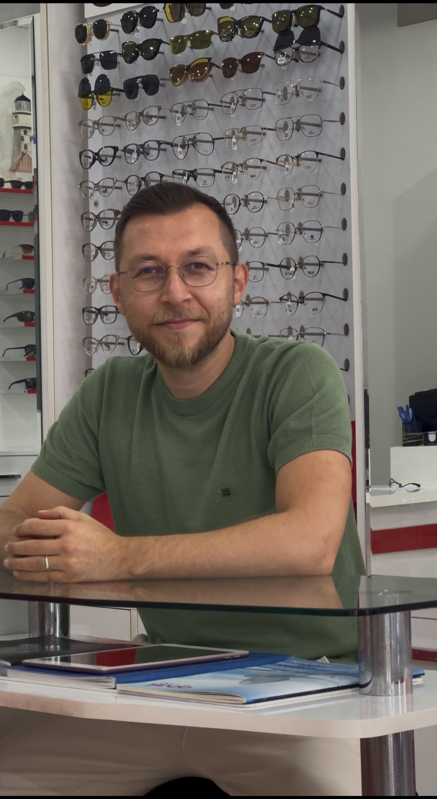
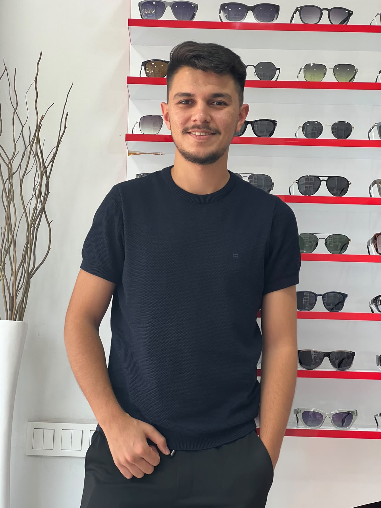

Numaralı Gözlük
Günlük kullanım, ofis, araç kullanımı ve okul ihtiyaçlarına uygun cam-çerçeve seçenekleri için doğru yönlendirme.
.jpeg)
.jpeg)
.jpeg)
Çelik Optik; numaralı gözlük, güneş gözlüğü, optik cam, çerçeve ve lens ihtiyaçlarınız için Akdeniz/Mersin’de ulaşımı kolay, şık ve güven veren mağaza deneyimi sunar.
Mersin’de bir optikten beklenen hız, güven ve doğru yönlendirme.
Adres: Yeni Mahallesi 5328. Sokak No:17/A, 33050 Akdeniz/MersinGoogle Ads kampanyaları için bu bölüm özellikle net tutuldu: kullanıcı hangi hizmeti aradıysa sayfada aynı ifadeyi hızlıca görür, arama/WhatsApp/yol tarifi aksiyonuna kolay ulaşır.
Günlük kullanım, ofis, araç kullanımı ve okul ihtiyaçlarına uygun cam-çerçeve seçenekleri için doğru yönlendirme.
Yüz tipine ve kullanım amacına uygun şık güneş gözlüğü alternatifleri; modern, klasik ve günlük modeller.
Lens kullanımı, bakım solüsyonları ve lens seçimi hakkında bilgilendirme. Reçete ve uygunluk önceliklidir.
İnceltilmiş cam, kaplamalı cam, mavi ışık filtreli cam ve günlük konfor odaklı farklı seçenekler.
Gözlüğünüzün yüzünüze daha rahat oturması için çerçeve ayarı, vida kontrolü ve bakım desteği.
Doktor reçetenizle cam ve çerçeve seçenekleri hakkında bilgi alabilir, size uygun çözümleri değerlendirebilirsiniz.
Gözlük seçimi; cam kalitesi, çerçeve uyumu, kullanım alışkanlığı ve satış sonrası desteğin birlikte düşünülmesi gereken bir süreçtir. Çelik Optik, müşterisini dinleyen, sade anlatan ve uzun vadeli memnuniyeti önemseyen bir hizmet anlayışıyla çalışır.
İhtiyaç netleştirilir; kullanım alanı, bütçe ve konfor beklentisine göre seçenekler sunulur.
Cam, kaplama, çerçeve ve bakım konusunda müşteriye anlaşılır bilgi verilir.
Mersin’de fiziki mağaza, açık adres, telefon ve yol tarifi ile güven veren bir iletişim yapısı.

Reçetenize ve kullanım alışkanlığınıza göre uygun cam ve çerçeve seçeneklerini açıkça anlatır.

Yüz tipinize, tarzınıza ve bütçenize uygun gözlük modelleri için yardımcı olur.
Çerçeve ayarı, vida kontrolü ve gözlük kullanım konforu için satış sonrası destek sağlar.
Bu alan SEO, GEO ve Google Ads kalite puanı için önemlidir. Arama niyetini karşılayan kısa, net ve güven veren cevaplar sayfada görünür şekilde yer alır.
Açık adres, telefon, WhatsApp ve harita bilgisi aynı sayfada. Google Ads dönüşüm takibi için her butona ayrı event tanımlandı.
Yeni Mahallesi, 5328. Sokak No:17/A, 33050 Akdeniz/Mersin